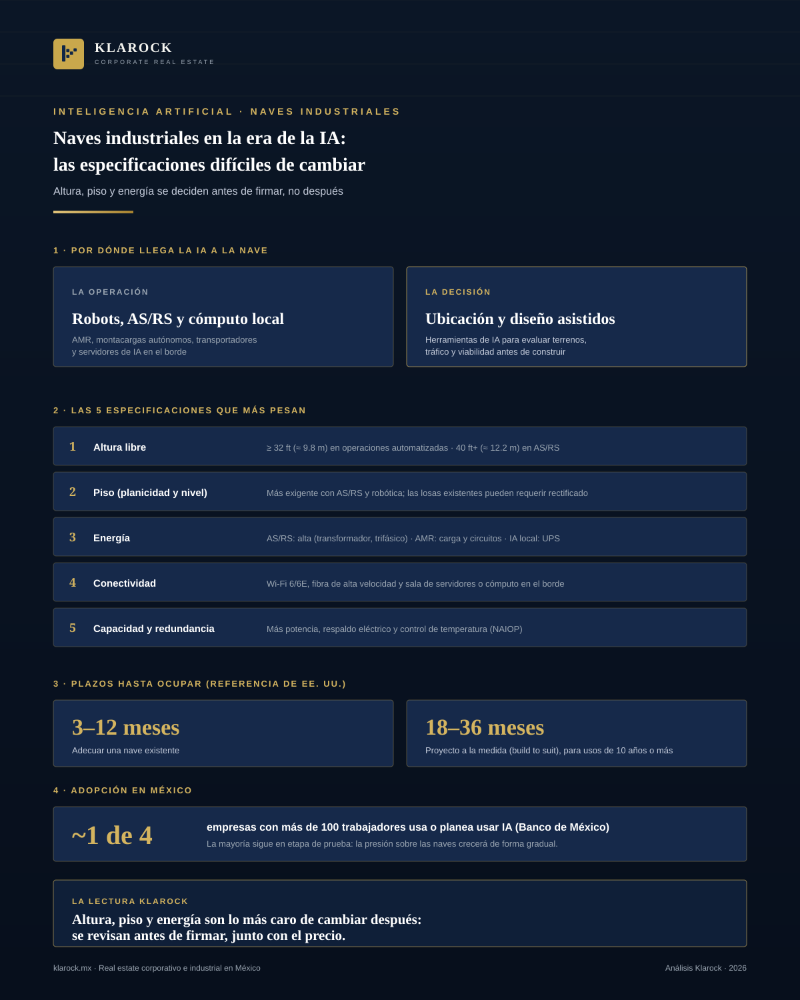

Industrial · 2026-10-20
Naves industriales en la era de la IA: qué especificaciones importan y cuáles son difíciles de cambiar
La inteligencia artificial ya no es solo un tema de software. Llega a la nave industrial por dos caminos: la operación (robots, almacenes automatizados y cómputo local) y la decisión de ubicación y diseño (herramientas que ayudan a evaluar terrenos y proyectos).

Resumen ejecutivo
La inteligencia artificial ya no es solo un tema de software. Llega a la nave industrial por dos caminos: la operación (robots, almacenes automatizados y cómputo local) y la decisión de ubicación y diseño (herramientas que ayudan a evaluar terrenos y proyectos). En los dos casos, lo que decide si una nave sirve es un conjunto corto de especificaciones físicas.
Algunas de esas especificaciones, como la altura libre, el piso y la capacidad eléctrica, son difíciles y caras de modificar una vez construida la nave. Por eso conviene definirlas antes de firmar un contrato de renta o de comprar, no después.
Este artículo resume qué piden hoy las operaciones automatizadas, qué se sabe y qué no se sabe del efecto de la IA sobre la demanda de espacio, y qué debe revisar cada tipo de actor: inquilino, propietario e inversionista.
1. La IA llega a la nave por dos vías
Por la operación. Los robots móviles autónomos (AMR), los montacargas autónomos, los sistemas de almacenamiento y recuperación automatizados (AS/RS), las bandas transportadoras y los servidores de cómputo local son la parte visible. Cada uno impone requisitos distintos al edificio.
Por la decisión. Las herramientas de IA también se usan antes de construir o rentar. Un reportaje de Bisnow de mayo de 2024 describe cómo desarrolladores y brokers estadounidenses las usan para estimar el tráfico de un sitio y probar si un terreno es viable; Prologis invirtió 20 millones de dólares en TestFit, una herramienta de ese tipo, y una encuesta del Site Selectors Guild encontró que cerca del 40% de sus miembros usaba IA generativa para seleccionar sitios, con limitaciones.
En México, la adopción apenas empieza. Según datos del Banco de México citados por Excélsior en diciembre de 2025, cerca de una cuarta parte de las empresas con más de 100 trabajadores ya usa IA o planea hacerlo, y en la mayoría de los casos sigue en etapas de prueba. Más de cuatro de cada diez han incorporado o evalúan automatizar procesos. Esto sugiere que la presión sobre las naves crecerá de forma gradual, no de golpe.
Para el lado de la operación diaria del almacén, véase nuestro análisis Logística bajo presión: ¿están los almacenes listos para la era de la IA?.
2. Las cinco especificaciones que más pesan
Una guía de Link Logistics publicada en junio de 2026 resume qué necesita una nave para operar con automatización. Los puntos centrales son estos:
- 1.Altura libre. Las operaciones automatizadas modernas suelen requerir 32 pies o más (unos 9.8 m), y algunas configuraciones de AS/RS llegan a 40 pies o más (unos 12.2 m). A mayor altura, más producto se almacena por metro cuadrado de planta.
- 2.Piso. La planicidad y el nivel de la losa (indicadores FF y FL) pesan más cuando hay AS/RS, transportadores de alta velocidad o robótica de precisión. Una losa existente puede no cumplir la especificación y requerir rectificado. El proveedor de automatización es quien define el valor exacto.
- 3.Energía. Un AS/RS exige alta potencia, con ampliación de transformador y servicio trifásico pesado; los AMR y los montacargas autónomos exigen estaciones de carga y circuitos dedicados; el cómputo de IA local exige una sala de datos con respaldo (UPS). La guía recomienda verificar el amperaje total, la capacidad del transformador y los acuerdos de servicio con la compañía eléctrica, y advierte que en mercados con restricciones una ampliación puede tardar más de un año.
- 4.Conectividad. Cobertura Wi-Fi 6 o 6E en toda la nave, antenas distribuidas, fibra de alta velocidad y un cuarto de servidores o de cómputo en el borde. Conviene revisar los ductos y los puntos de entrada de fibra antes de instalar.
- 5.Capacidad y redundancia. El estudio de la NAIOP Research Foundation (octubre de 2025) recomienda que quien desarrolla para robótica avanzada planee más capacidad eléctrica, infraestructura de red, redundancia de energía y mejor control de temperatura.
La misma guía advierte que la altura libre, el piso y la energía son las especificaciones más difíciles y costosas de cambiar después de la construcción. Esa es la idea central de este artículo.
Cómo se ve esto en una nave real
Como referencia, el proyecto Clase AAA que Klarock comercializa en Ciénega de Flores, Nuevo León, tiene altura libre de 11 a 14 m (aproximadamente 36 a 46 pies), piso de 15 cm con capacidad de 4 toneladas por m², 43 andenes y 2,400 KW de energía con opción de aumento y subestación de CFE al frente. Es un ejemplo de cómo se documentan estas especificaciones en una ficha, no una promesa de que sirva para cualquier sistema: cada operación debe validarla con su proveedor.
3. Plazos: adecuar o construir
La guía de Link Logistics, basada en el mercado estadounidense, da dos referencias de tiempo hasta ocupar el espacio: de 3 a 12 meses para adecuar una nave existente y de 18 a 36 meses para un proyecto a la medida (build to suit), pensado para usos de 10 años o más. En México los plazos dependen de la ciudad, del uso de suelo y de la disponibilidad eléctrica, por lo que conviene tomarlas como orden de magnitud y no como compromiso.
4. ¿Más o menos demanda de naves? Lo que nadie sabe todavía
Es tentador afirmar que la IA aumentará la demanda de espacio industrial, pero la evidencia no lo respalda todavía. La NAIOP Research Foundation señala que el efecto neto sobre la demanda es incierto: una mejor automatización del comercio y del marketing puede impulsar el comercio electrónico y la demanda logística, pero cadenas de suministro y distribuciones de planta más eficientes pueden compensar ese crecimiento.
Lo que sí se puede decir con más confianza es que cambia el tipo de nave que se busca: más peso en altura, energía y conectividad, y menos en el simple precio por metro cuadrado.
Para el efecto de la IA en la red eléctrica y en los centros de datos, véase Data centers en México: cuando el éxito crece más rápido que la energía.
5. Qué revisar según tu perfil
- —Inquilino. Define primero los sistemas que vas a instalar y pide a tu proveedor de automatización las especificaciones de piso, carga y potencia. Compáralas con la ficha de la nave, confirma la capacidad eléctrica y el servicio con la compañía eléctrica, y negocia por escrito el derecho a hacer modificaciones.
- —Propietario o desarrollador. Documenta en la ficha la altura libre, las características del piso, la potencia disponible, la fibra y el espacio para ampliar el transformador. Una nave con datos claros se evalúa más rápido.
- —Inversionista. Pregunta qué tan adaptable es el activo. Una nave con altura, piso y energía limitados es más difícil de reposicionar si cambia el tipo de inquilino.
6. Perspectiva Klarock
Las especificaciones que la IA vuelve críticas son las que menos se pueden corregir después. Por eso, al comparar naves recomendamos revisar primero altura libre, piso, potencia y conectividad, y solo después el precio. En cada ficha de nuestro inventario publicamos las especificaciones disponibles para que la comparación sea objetiva.
Si su empresa está evaluando una nave para operar con automatización, o es propietaria de un inmueble y quiere conocer su posicionamiento, el equipo de Klarock puede acompañarle en el análisis de ubicación y especificaciones. Puede ver el inventario por ciudad en naves industriales en México.
Para una conversación sobre selección de sitio y especificaciones de naves, contáctenos al 668 189 4960.
Fuentes consultadas
- —Link Logistics, "Warehouse Automation Infrastructure: A Practical Guide for Logistics Operations" (2 de junio de 2026): linklogistics.com
- —NAIOP Research Foundation, "From Static to Strategic: AI's Role in Next-Generation Industrial Real Estate" (octubre de 2025): naiop.org
- —Bisnow, "AI Has Quietly Become Part of Industrial Real Estate Development" (2 de mayo de 2024): bisnow.com
- —Excélsior, "La inteligencia artificial como eje estratégico en 2026", con datos del Banco de México (22 de diciembre de 2025): excelsior.com.mx
¿Te interesa esta oportunidad?
Escríbenos y un socio director te contactará en menos de 24 horas hábiles.
Contactar a un Socio Director